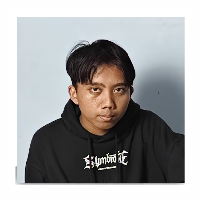
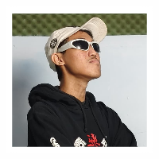
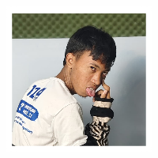
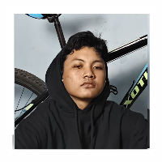

|
|||||
 |
 |
 |
 |
||
 |
|||||
ROLE
|  | ALL rounderPembalap sepeda yang unggul di tanjakan dan time triallist, dan juga bisa berfungsi menjadi sprinter ataupun jagoan turunan |
 | SprinterPembalap sepeda jalan raya yang dapat mengakhiri balapan dengan akselerasi tinggi hingga mencapai kecepatan tertinggi, sering kali dengan menggunakan taktik bantuan tarikan dari beberapa anggota tim untuk menghemat energi. |
|  | ClimberPembalap sepeda yang sanagt dominan atau menguasai tipe jalanan yang cenderung berbukit-bukit atau pegunungan, memiliki endurance yang sangat baik dan cenderung memiliki fisik ramping |
 | Time TrialistPembalap sepeda yang dapat mempertahankan kecepatan tinggi secara konsisten untuk jangka waktu yang di tentukan, baik secara individual ataupun secara tim. |